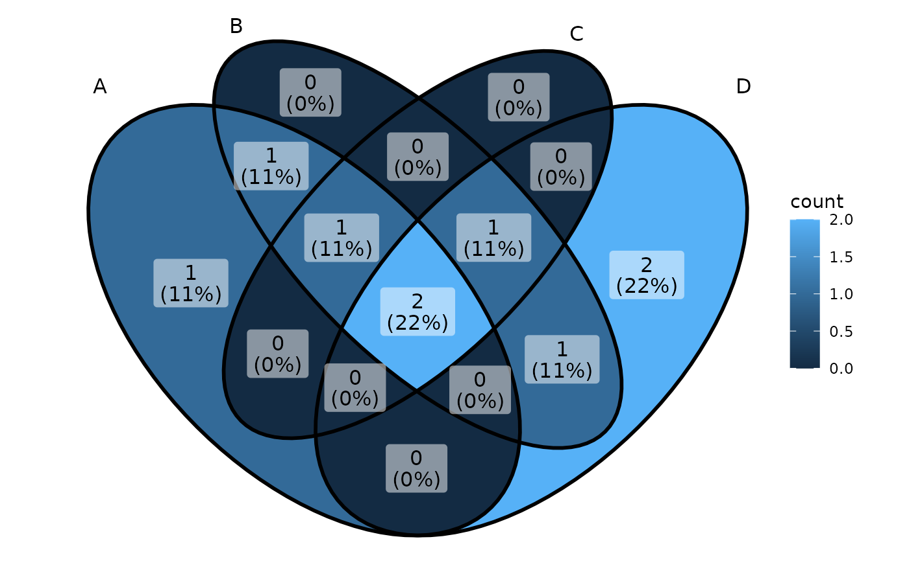
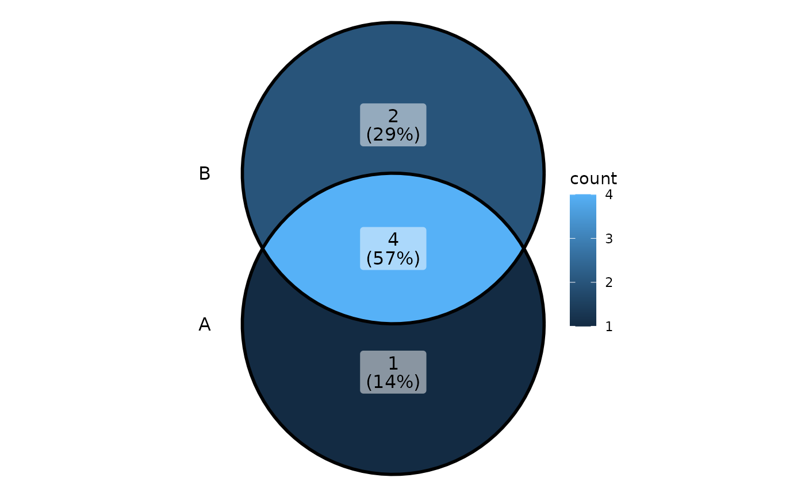

ggVennDiagram main parser
ggVennDiagram( x, category.names = names(x), show_intersect = FALSE, set_color = "black", set_size = NA, label = c("both", "count", "percent", "none"), label_alpha = 0.5, label_geom = c("label", "text"), label_color = "black", label_size = NA, label_percent_digit = 0, label_txtWidth = 40, edge_lty = "solid", edge_size = 1, ... )
Arguments
| x | list of items |
|---|---|
| category.names | default is names(x) |
| show_intersect | if TRUE the text can be visualized by `plotly` |
| set_color | color of set labels ("black") |
| set_size | size of set labels (NA) |
| label | format of region labels, select one from c("count","percent","both","none") |
| label_alpha | set 0 to remove the background of region labels |
| label_geom | layer of region labels, choose from c("label", "text") |
| label_color | color of region labels ("black") |
| label_size | size of region labels (NA) |
| label_percent_digit | number of digits when formatting percent label (0) |
| label_txtWidth | width of text used in showing intersect members, will be ignored unless show_intersection is TRUE (40) |
| edge_lty | line type of set edges ("solid") |
| edge_size | line width of set edges (1) |
| ... | Other arguments passed on to downstream functions. |
Value
A ggplot object
Examples
ggVennDiagram(x[1:3]) # 3d vennggVennDiagram(x[1:2]) # 2d venn